Место рождения: г. Набережные челны
Цель сбора: Операция на спинном мозге СДР в клинике Children's StLouise США
Срок сбора: Экстренно
Для переключения между сайтами, наведите сюда
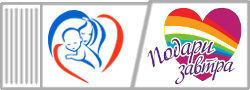
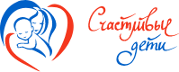
Официальный сайт благотворительного фонда "Счастливые дети"
453210, Россия, р.Башкортостан, г.Ишимбай, ул.Ишбулдина 141А+7(987) 138-32-11
Матвеев Семён, 8 лет
ДЦП
Матиенко Паисий, 4 года
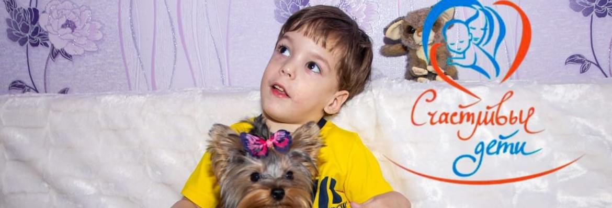
ДЦПМесто рождения: г.Стерлитамак
Цель сбора: Реабилитация
Срок сбора: ЭкстренноБойко Савелий, 1 год
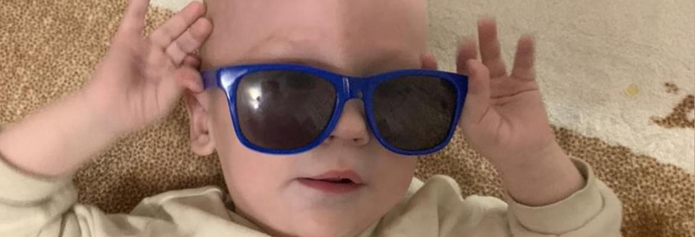
Спинальная мышечная атрофия 1 типаМесто рождения: Ставропольский край, Новоселицкий район, с. Новоселицкое
Цель сбора: сбор на препарат Zolgensma
Срок сбора: ЭкстренноВасильева Юля, 6 лет
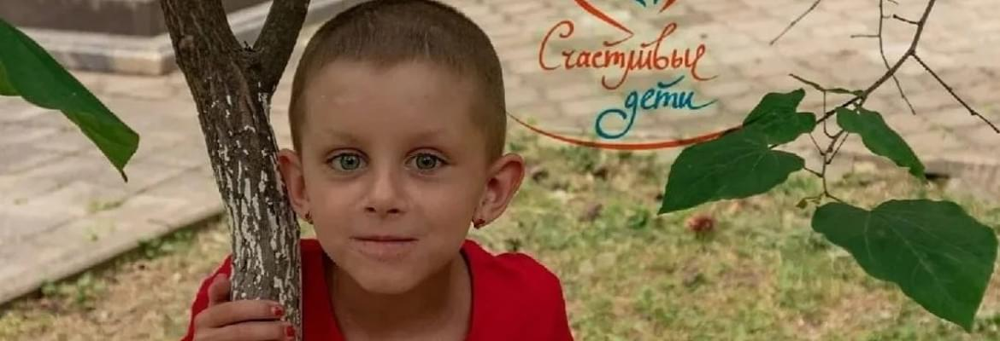
Нейробластома забрюшинного пространства(РАК)Место рождения: г.Краснодар
Цель сбора: На препарат иммунотерапии "Динутуксимаб бета" в онкоцентре им. Р.М. Горбачевой.
Срок сбора: СрочноРыжков Дмитрий, 8 лет
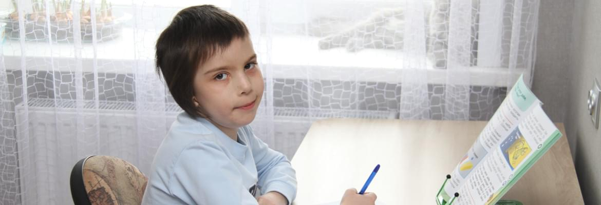
Врождённый порок сердцаМесто рождения: Липецкая обл., п.Лев Толстой
Цель сбора: Операция в Boston Children's Hospital, США.
Срок сбора: ЭкстренноТитаренко Тимур, 8 лет
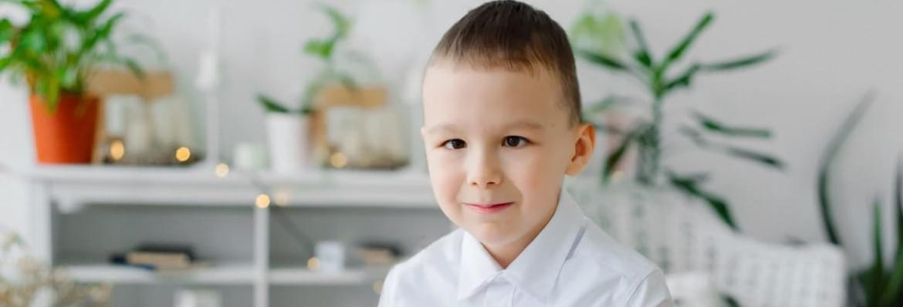
ДЦП, Спастический тетрапарезМесто рождения: г.Чебоксары
Цель сбора: Операция на спинном мозге СДР в клинике Children's St Louise США
Срок сбора: ЭкстренноКапаклы Максим, 5 лет
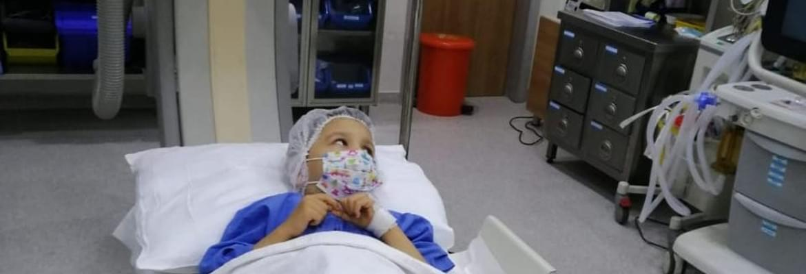
Нейробластома 4 стадия (РАК)Место рождения: г.Тирасполь, Респ. Молдова
Цель сбора: Сбор на противорецидивное лечение в клинику " Медиполь", Турция
Срок сбора: СрочноРодионова Арина, 6 лет
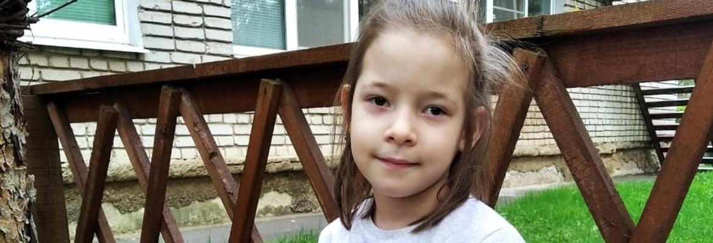
Врождённый порок сердцаМесто рождения: г.Владимир
Цель сбора: Две операции в США, в клинике St Louis Children’s hospital
Срок сбора: Экстренно
Им нужна ваша помощь
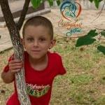
ФИО: Васильева Юля
Возраст: 6 лет
Место рождения: г.Краснодар
Диагноз: Нейробластома забрюшинного пространства (РАК)
Цель сбора: Иммунотерапия препаратом «Динутуксимаб бета» В онкоцентре им. Р.М. Горбачевой.
Срок сбора: Срочно
Возраст: 6 лет
Место рождения: г.Краснодар
Диагноз: Нейробластома забрюшинного пространства (РАК)
Цель сбора: Иммунотерапия препаратом «Динутуксимаб бета» В онкоцентре им. Р.М. Горбачевой.
Срок сбора: Срочно
Собрано 41 164 из 1 300 000 ₽
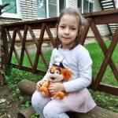
ФИО: Родионова Арина
Возраст: 6 лет
Место рождения: г.Владимир
Диагноз: Врожденный порок сердца
Цель сбора: 2 операции в США в клинике St Louis Children’s hospital.
Срок сбора: Экстренно
Возраст: 6 лет
Место рождения: г.Владимир
Диагноз: Врожденный порок сердца
Цель сбора: 2 операции в США в клинике St Louis Children’s hospital.
Срок сбора: Экстренно
Собрано 0 из 6 000 000 ₽
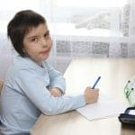
ФИО: Рыжков Дмитрий
Возраст: 8 лет
Место рождения: Липецкая обл., п.Лев Толстой
Диагноз: Врожденный порок сердца
Цель сбора: Операция в Boston Children’s Hospital, США.
Срок сбора: Экстренно
Возраст: 8 лет
Место рождения: Липецкая обл., п.Лев Толстой
Диагноз: Врожденный порок сердца
Цель сбора: Операция в Boston Children’s Hospital, США.
Срок сбора: Экстренно
Собрано 21 001 из 500 000 ₽
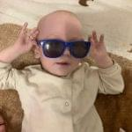
ФИО: Бойко Савелий
Возраст: 1 год
Место рождения: Ставропольский край, Новоселицкий район, с.Новоселицкое
Диагноз: Спинальная мышечная атрофия 1 типа
Цель сбора: На препарат Zolgensma.
Срок сбора: Экстренно
Возраст: 1 год
Место рождения: Ставропольский край, Новоселицкий район, с.Новоселицкое
Диагноз: Спинальная мышечная атрофия 1 типа
Цель сбора: На препарат Zolgensma.
Срок сбора: Экстренно
Собрано 2 071 288 из 165 000 000 ₽
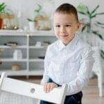
ФИО: Татаренко Тимур
Возраст: 8 лет
Место рождения: г.Чебоксары
Диагноз: ДЦП, спастический тетрапарез
Цель сбора: Операция на спинном мозге СДР в клинике Children’s St Louise США.
Срок сбора: Экстренно
Возраст: 8 лет
Место рождения: г.Чебоксары
Диагноз: ДЦП, спастический тетрапарез
Цель сбора: Операция на спинном мозге СДР в клинике Children’s St Louise США.
Срок сбора: Экстренно
Собрано 0 из 4 422 130 ₽
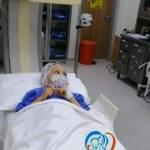
ФИО: Капаклы Максим
Возраст: 5 лет
Место рождения: г.Тирасполь, респ.Молдова
Диагноз: Нейробластома, 4 стадия (РАК)
Цель сбора: Сбор на противорецидивное лечение в клинику » Медиполь», Турция.
Срок сбора: Срочно
Возраст: 5 лет
Место рождения: г.Тирасполь, респ.Молдова
Диагноз: Нейробластома, 4 стадия (РАК)
Цель сбора: Сбор на противорецидивное лечение в клинику » Медиполь», Турция.
Срок сбора: Срочно
Собрано 165 580 из 1 000 000 ₽
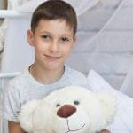
ФИО: Матвеев Семён
Возраст: 8 лет
Место рождения: г.Набережные челны
Диагноз: ДЦП
Цель сбора: Операция на спинном мозге СДР в клинике Children’s StLouise США.
Срок сбора: Экстренно
Возраст: 8 лет
Место рождения: г.Набережные челны
Диагноз: ДЦП
Цель сбора: Операция на спинном мозге СДР в клинике Children’s StLouise США.
Срок сбора: Экстренно
Собрано 0 из 4 433 000 ₽
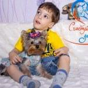
ФИО: Матиенко Паисий
Возраст: 4 лет
Место рождения: г.Стерлитамак, респ.Башкортостан
Диагноз: ДЦП
Цель сбора: Реабилитация
Срок сбора: Экстренно
Возраст: 4 лет
Место рождения: г.Стерлитамак, респ.Башкортостан
Диагноз: ДЦП
Цель сбора: Реабилитация
Срок сбора: Экстренно
Собрано 30 248 из 312 800 ₽
Новости фонда
Коротко о благотворительном фонде "Счастливые дети"
Помогли более чем 250 семьям.
Собрано и направлено нуждающимся более 10 миллионов рублей.
Более 10 сотрудников фонда работают над тем, чтобы оказать помощь тем, кто нуждается в ней.
Вы им помогли
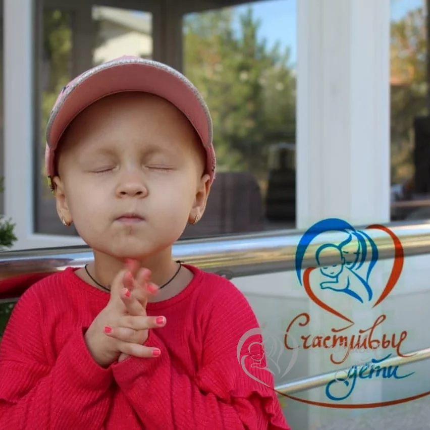
Каструбова Вика
ФИО: Каструбова Виктория. Возраст: 3 года
Место рождения: Приморский край, п.Преображение. Диагноз: Нейробластома
Место рождения: Приморский край, п.Преображение. Диагноз: Нейробластома
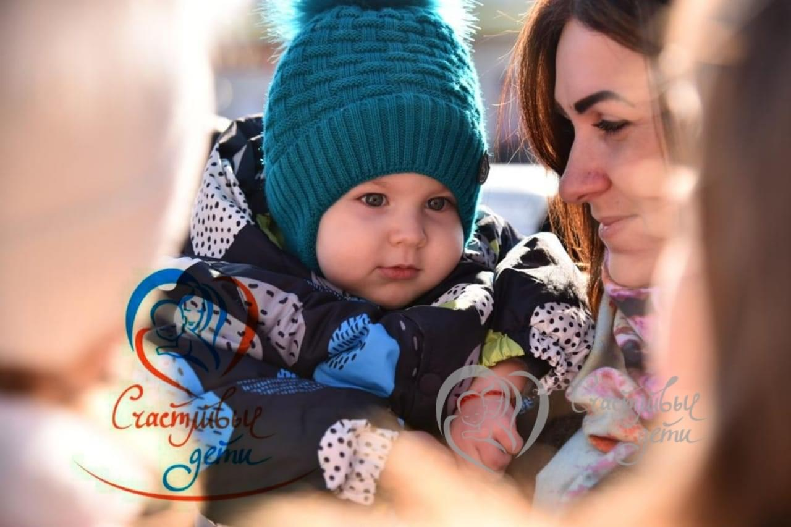
Рожковский Илья
ФИО: Рожковский Илья. Возраст: 3 года
Место рождения: Ставропольский край, г.Светлоград. Диагноз: Спинальная мышечная атрофия (СМА) 1 типа
Место рождения: Ставропольский край, г.Светлоград. Диагноз: Спинальная мышечная атрофия (СМА) 1 типа
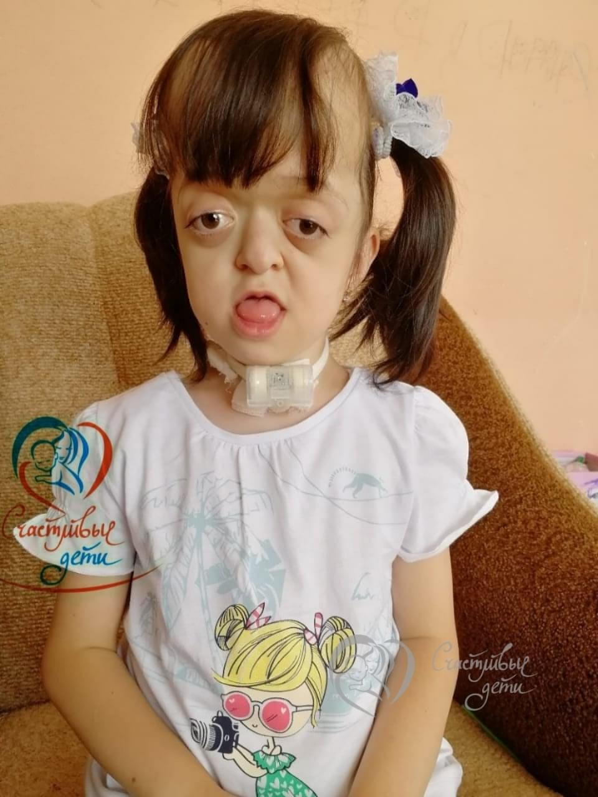
Енокян Аника
ФИО: Енокян Аника. Возраст: 9 лет
Место рождения: Россия, г.Рязань Диагноз: Поликраниосиностоз, синдром Пфайффера, синдром Арнольда-Киари 1 степени, гипоплазия верхней челюсти, носитель трахеостомы.
Место рождения: Россия, г.Рязань Диагноз: Поликраниосиностоз, синдром Пфайффера, синдром Арнольда-Киари 1 степени, гипоплазия верхней челюсти, носитель трахеостомы.
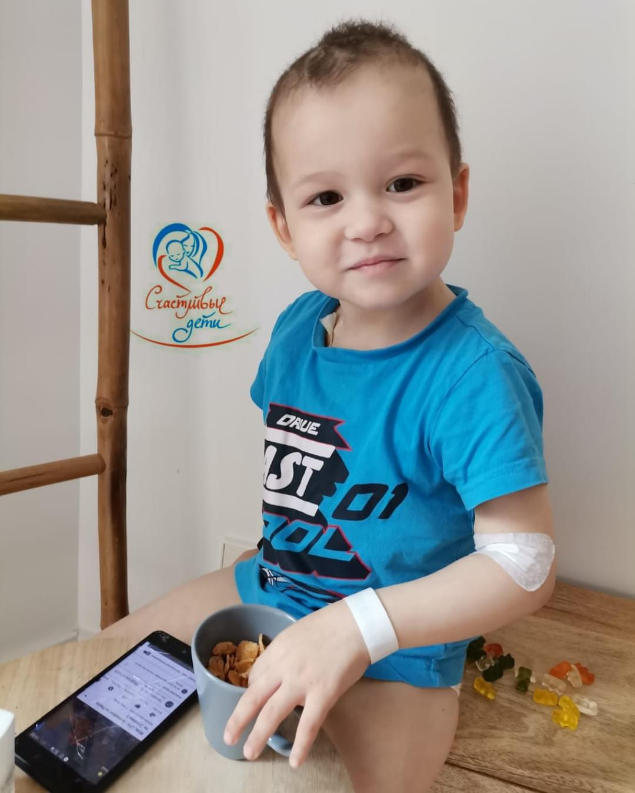
Верницкий Владислав
ФИО: Верницкий Владислав. Возраст: 3 года
Место рождения: Краснодарский край, г.Сочи. Диагноз: Нейробластома (РАК)
Место рождения: Краснодарский край, г.Сочи. Диагноз: Нейробластома (РАК)
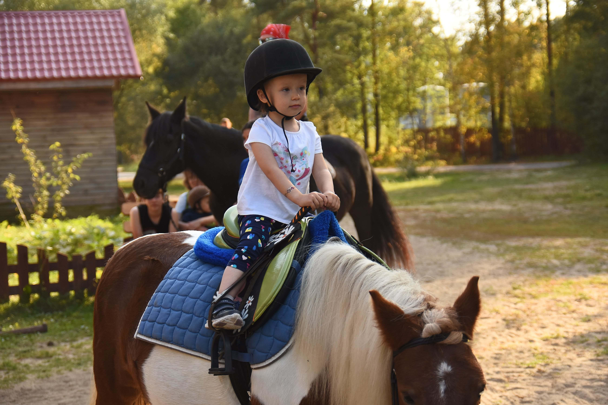
Абрамова Анна
ФИО: Абрамова Анна. Возраст: 3 года 9 месяцев
Место рождения: Россия, г.Москва. Диагноз: Нейробластома левого надпочечника (РАК)
Место рождения: Россия, г.Москва. Диагноз: Нейробластома левого надпочечника (РАК)
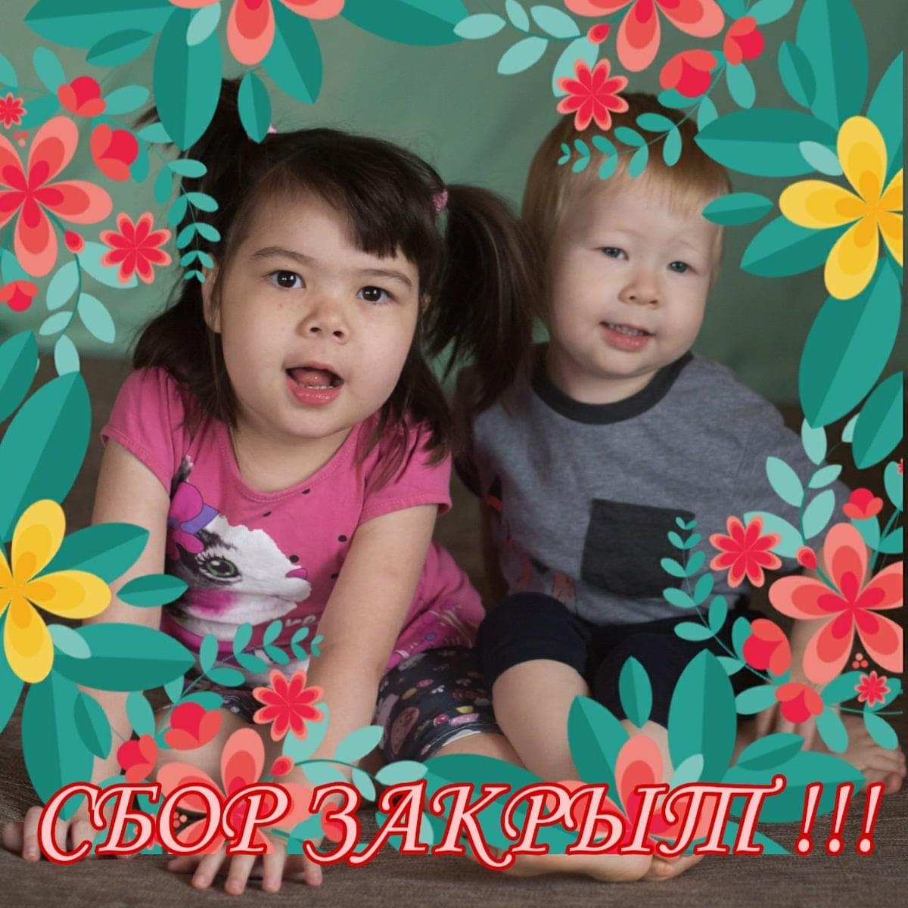
Галиуллина Агата
ФИО: Галиуллина Агата. Возраст: 6 лет
Место рождения: респ.Башкортостан, г.Уфа. Диагноз: Метахроматическая лейкодистрофия (МЛД)
Место рождения: респ.Башкортостан, г.Уфа. Диагноз: Метахроматическая лейкодистрофия (МЛД)